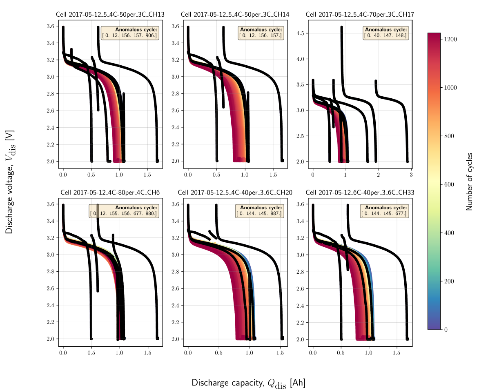

Open-Source Benchmark of Anomaly Detection (OSBAD)¶
osbad is a Python package designed to provide tools, datasets, and
benchmarks for anomaly detection in chemical and material science applications.
With the growing reliance on data-driven analysis in fields ranging from
battery, catalysis and polymers to alloys and nanomaterials, the ability to
detect anomalies reliably and efficiently is crucial for discovery, safety,
and performance optimization.
{kind=link}
What are Anomalies?¶
Anomalies are observations in data that deviate significantly from expected or typical patterns. In the context of battery systems, anomalies may signal degradation, faults, or unsafe conditions and can indicate issues like overheating, capacity fade, or internal short circuits.
We consider two primary types of anomalies:

Point anomalies: A single data point that is significantly different from the rest. Example: A sudden change in the voltage, current or temperature measurement for battery systems or a sudden spike in temperature during a reaction or an outlying measurement in spectroscopic data.
Collective anomalies: A sequence or group of data points that, when considered together, are anomalous, even if each point appears normal in isolation. Example: A continuous series of abnormal voltage measurement across a window that diverges from expected discharge behavior (see the following figure) or a time series of abnormal stress-strain measurements in a mechanical test that diverges from expected material deformation behavior.
{kind=link}
Why is Anomaly Detection Important?¶
Chemical and material systems are critical in applications such as energy storage, catalysis, electronics, structural design, and biomedical devices. Anomaly detection plays a vital role in:
Research efficiency: Identifying irregular experimental data points for faster analysis and reproducibility.
Material discovery: Detecting rare but valuable events that could indicate new material properties.
Process safety: Early detection of unsafe conditions (e.g., thermal runaway in battery operations).
Preventive maintenance: Identifying degradation or failure modes before performance drops.
Regulatory compliance: Ensuring that processes and produced materials meet consistency and performance standards.
Robust anomaly detection helps improve reliability, accelerate innovation, and ensure safety across a wide range of chemical and material applications.
Methods Included in This Benchmark¶
This benchmark includes a broad spectrum of approaches grouped into three categories: (1) statistical methods, (2) distance-based metrics and (3) machine-learning approaches. Each method is applied and tested on curated benchmarking datasets to assess its suitability and effectiveness.
Statistical methods¶
Standard Deviation
Median Absolute Deviation (MAD)
Interquartile Range (IQR)
Z-score
Modified Z-score
Distance-based metrics¶
Euclidean Distance
Manhattan Distance
Minkowski Distance
Mahalanobis Distance
Machine-learning approaches¶
Isolation Forest
K-Nearest Neighbors (KNN)
Gaussian Mixture Models (GMM)
Local Outlier Factor (LOF)
Principal Component Analysis (PCA)
Autoencoders (AE)
Evaluation Metrics¶
This benchmark evaluates each method using the following metrics:
Accuracy: Overall correctness of the anomaly detector
Precision: Proportion of detected anomalies that are truly anomalous
Recall: Proportion of actual anomalies that were correctly detected
F1-score: Harmonic mean of precision and recall
Matthews Correlation Coefficient (MCC): A balanced measure that handles imbalanced datasets by evaluating true positives, true negatives, false positives and false negatives,
These metrics help ensure a fair and comprehensive comparison across different detection techniques.